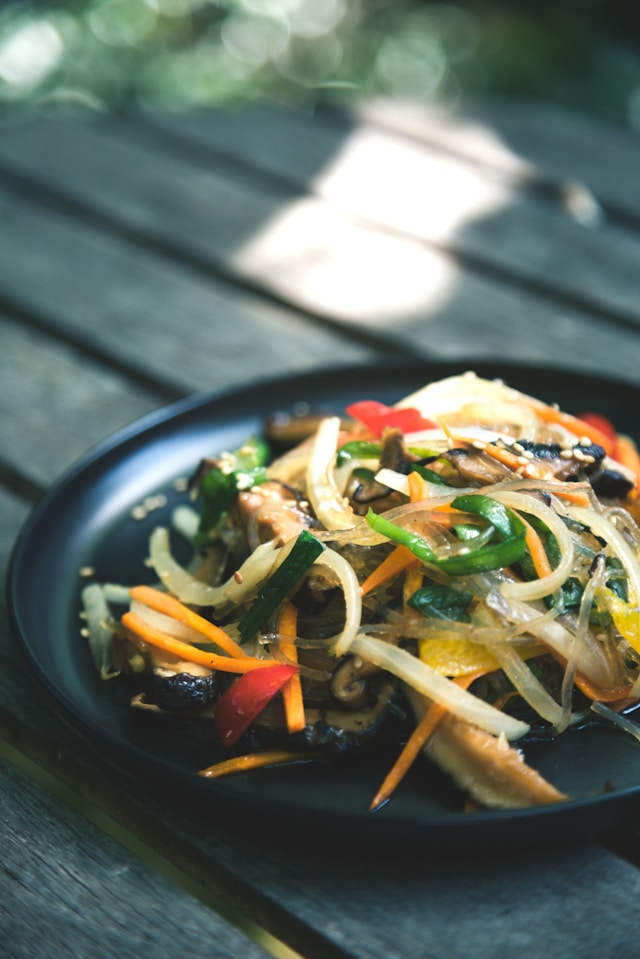

Stir Fry

Description
This quick and easy stir fry can be made in 20 minutes. It can be turned into a vegetable dish, if you wish to omit the meat.
Ingredients
- 300g chicken, diced
- 1 clove of garlic
- Beansprouts
- Broccoli
- Baby corn
- Red and yellow peppers
- 2 tablespoons oyster sauce
- Noodles
- Spring onions (to garnish)
Steps
- Heat a small amount of oil in a wok on a high heat and cook the chicken until browned.
- Slice the peppers and add all vegetables to the pan with the chicken. Cook for a further 5 mins.
- Chop the garlic and add this and the oyster sauce to the chicken and vegetable mix.
- Boil a pan of water for the noodles. Add them and cook for 5 mins.
- Once chicken is cooked and the sauce has thickened, place the noodles in a bowl and add the chicken and vegetables on top.
- Add sliced spring onions to garnish if required. Enjoy!